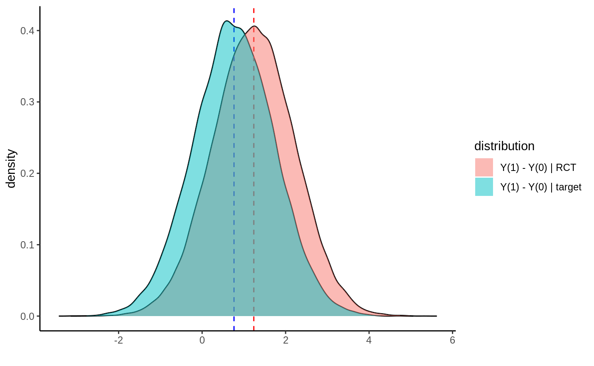

library(grf)
This vignette gives a brief overview of how to use GRF to estimate average treatment effects (ATEs) on a new target population defined by some covariates \(X_{test}\). The first part gives a brief overview of the setup and a doubly robust estimator, the second part gives a code example of how to implement the estimator using GRF.
The general problem of conducting inference on a new target population given estimates from a previous trial, is referred to as a transport problem, and there is a large literature covering the topic. In this vignette we consider the setup and doubly robust estimator proposed in Dahabreh et al. (2020).
We define a population indexed by \(i = 1 ... n\). For a subset \(RCT\) of this population we have access to results from a randomized/observational trial/study: we have \(n_{RCT}\) observations of baseline covariates \(X_i\), binary treatment indicators \(W_i=\{0, 1\}\) and responses \(Y_i\). We also have access to the remaining subset \(obs\) where we only observe \(n_{obs}\) observations (\(n_{RCT} + n_{obs}=n\)) of the baseline covariates \(X_i\). We say the first subset participated in a trail, and that \(S_i = 1\), and the second did not: \(S_i = 0\). We are interested in the average treatment effect among the non-participants (the “target” population), that is:
\[E[Y(1) - Y(0) | S = 0],\]
where \(Y(1), Y(0)\) are potential outcomes corresponding to the two treatment states.
In general, this average is not equal to the ATE among trial participants, \(E[Y(1) - Y(0) | S = 1]\), since the distribution of treatment effect modifiers may be different among trial participants and non-participants.
The following table illustrates the setup:
| Population | Unit | S | X | Y | W |
|---|---|---|---|---|---|
| trial population | 1 | 1 | \(X_1\) | \(Y_1\) | \(W_1\) |
| trial population | … | 1 | |||
| trial population | \(n_{RCT}\) | 1 | \(X_{n_{RCT}}\) | \(Y_{n_{RCT}}\) | \(W_{n_{RCT}}\) |
| target population | \(n_{RCT}\) + 1 | 0 | \(X_{n_{RCT}+1}\) | ? | ? |
| target population | … | 0 | ? | ? | |
| target population | \(n_{RCT} + n_{obs}\) | 0 | \(X_{n_{RCT}+n_{obs}}\) | ? | ? |
Estimating \(E[Y(1) - Y(0) | S = 0]\) given estimates of \(E[Y(1) - Y(0) | S = 1]\) requires two assumptions beyond the standard identify assumptions for causal inference in observational/randomized trials:
Conditional exchangeability in mean over S. The potential outcome mean is independent of trial participation conditional on baseline covariates: \(E[Y(W) | X = x, S = 1] = E[Y(W) | X = x, S = 0]\).
Positivity of trial participation. The probability of participating in the trail, conditional on the covariates needed to ensure exchangeability, is positive: \(P[S = 1 | X = x] > 0\).
Condition 1 is known as the transport condition and is important, but untestable. Condition 2 essentially states that all covariate patterns in the target population should be present in the target population, and the plausibility of this can be gauged by inspecting the estimates of \(P[S = 1 | X = x] > 0\).
Some definitions first. \(\hat \tau^{(-i)}(X_i)\) are estimates of the conditional average treatment effects \(E[Y_i(1) - Y_i(0) | X_i = x]\). \(\hat p^{(-i)}(X_i)\) are estimates of the conditional trial-inclusion probabilities \(P[S = 1 | X_i = x]\). \(\hat e^{(-i)}(X_i)\) are estimates of the treatment propensities \(E[W_i | X_i = x]\) and \(\mu^{(-i)}(X_i, W_i)\) are estimates of the conditional responses \(E[Y_i | W_i = w, X_i = x]\). The superscript (-1) indicates cross-fitting, i.e. the estimate for unit \(i\) is obtained without using unit \(i\) for estimation. \(n_{RCT}\) is the number of units participating in the trial, and \(n_{obs}\) is the number of units in the target population.
A doubly robust estimate of the ATE on the target population is:
\[\begin{equation} \begin{split} & \hat \tau_{target} = \frac{1}{n_{obs}} \sum_{i \in obs} \hat \tau^{(-i)}(X_i) + \\ & \frac{1}{n_{obs}} \sum_{i \in RCT} \left(\frac{1 - \hat p^{(-i)}(X_i)}{\hat p^{(-i)}(X_i)}\right) \left(\frac{W_i - \hat e^{(-i)}(X_i)}{\hat e^{(-i)}(X_i)(1-\hat e^{(-i)}(X_i))}\right) \left(Y_i - \hat \mu^{(-i)}(X_i, W_i) \right). \end{split} \end{equation}\]
This is equation (4) in Dahabreh et al. (2020) written on contrast form. All the quantities needed for this estimator are easily obtained with GRF. The main difference from the traditional doubly robust ATE estimator among trial participants is the presence of the transport probabilities \(\hat p^{(-i)}(X_i)\), which makes an appearance as an inverse odds term. The quantity \(\mu^{(-i)}(X_i, W_i)\) can be constructed from a causal forest fit, see this vignette for details. We can also use this construction for standard error estimates. In general doubly robust estimators respect an oracle property w.r.t the nuisance components, meaning we can use plug-in estimates in place of the true values and retain some first-order equivalence and compute the variance of this expression directly (which in this case reduces to a sum of two independent terms).
The following function implements this estimator, taking as argument an ordinary causal forest (or causal survival forest) trained with a binary treatment.
Input:
forest: a trained causal forest.X.test: a covariate matrix \(X\) to compute the ATE on.p.hat: optional estimates of the trial inclusion probabilities \(P[S = 1 | X = x]\) for the trial participating units. If these are not provided they are estimated with a regression forest.Output: A doubly robust estimate of the ATE on the test set, along with standard errors.
average_treatment_effect_test <- function(forest, X.test, p.hat = NULL) { Y.hat <- forest$Y.hat Y.orig <- forest$Y.orig W.hat <- forest$W.hat W.orig <- forest$W.orig n.rct <- length(Y.orig) n.obs <- nrow(X.test) if (is.null(p.hat)) { S.forest <- regression_forest(X = rbind(forest$X.orig, X.test), Y = c(rep(1, n.rct), rep(0, n.obs)), num.trees = 500) p.hat <- predict(S.forest)$predictions[1:n.rct] } tau.hat.test <- predict(forest, X.test)$predictions tau.hat.train <- predict(forest)$predictions debiasing.weights <- (1 - p.hat) / p.hat * (W.orig - W.hat) / (W.hat * (1 - W.hat)) Y.residual <- Y.orig - (Y.hat + tau.hat.train * (W.orig - W.hat)) tau.hat <- mean(tau.hat.test) + sum(debiasing.weights * Y.residual) / n.obs sigma2.hat <- var(tau.hat.test) / n.obs + sum(Y.residual^2 * (debiasing.weights / n.obs)^2) c(estimate = tau.hat, std.err = sqrt(sigma2.hat)) }
Note the estimator involves division by the transport probabilities \(\hat p^{(-i)}(X_i)\), which will be a problem if too small. In general it is a good idea to plot the histogram of these estimates to asses if there is a positivity issue.
In this section we simulate a simple example where the distribution of treatment effect modifiers (\(X_1\)) are different in the randomized trial and target population (i.e., the trial inclusion probability depends on an effect modifier). Plotting the simulated potential outcomes, the two distributions look like:

The blue distribution is the target population we want an ATE for. The red distribution is the RCT we have access to. The dashed lines indicate the means. Below we simulate a draw from this setup, then estimate the target ATE and compute a 95% confidence interval, as well as compare it with the “naive” approach of just averaging predictions on a test set.
n <- 2000 p <- 5 X.population <- matrix(rnorm(n * p), n, p) trial.inclusion.prob <- 1 / (1 + exp(-X.population[, 1] / 2)) S <- rbinom(n, 1, trial.inclusion.prob) X.test <- X.population[S == 0, ] X <- X.population[S == 1, ] W <- rbinom(nrow(X), 1, 0.5) tau <- X[, 1] + 1 Y <- X[, 2] + tau * W + rnorm(nrow(X)) forest <- causal_forest(X, Y, W, W.hat = 0.5) ate.test <- average_treatment_effect_test(forest, X.test) estimate <- ate.test[1] std.err <- ate.test[2] sprintf("Estimate: %1.2f", estimate) #> [1] "Estimate: 0.81" sprintf("95%% CI: (%1.2f, %1.2f)", estimate - 1.96 * std.err, estimate + 1.96 * std.err) #> [1] "95% CI: (0.65, 0.96)" sprintf("Naive estimate: %1.2f", mean(predict(forest, X.test)$predictions)) #> [1] "Naive estimate: 0.86" sprintf("True mean: %1.2f", mean(X.test[, 1] + 1)) #> [1] "True mean: 0.78"
Dahabreh, Issa J., Sarah E. Robertson, Jon A. Steingrimsson, Elizabeth A. Stuart, and Miguel A. Hernan. Extending inferences from a randomized trial to a new target population. Statistics in Medicine 39(14), 2020. (paper)
The case where we just want an estimate of the conditional mean \(E[Y | X_{test}]\) can also be derived as a special case of the transport routine described above. There is however a simpler way to achieve this using just a plain causal forest with a dummy treatment indicator: denote the original training data by \((X_{train}, Y_{train})\) and the new test data by \(X_{test}\). Augment the data the following way with a dummy treatment and response variable \((X, Y, W)\): \((X_{train}, Y_{train}, 1)\) and \((X_{test}, 0, 0)\). Then the average treatment effect on controls (ATC) from a causal forest fit on this augmented data will give an estimate of \(E[Y | X_{test}]\): since we “defined” the potential outcomes to be \(Y(1) = Y\) and \(Y(0) = 0\), we have that \(E[Y(1) - Y(0) | X_{test}] = E[Y | X_{test}]\).
n <- 2000 p <- 5 X <- matrix(rnorm(n * p), n, p) S.hat <- 1 / (1 + exp(-X[, 1] / 2)) S <- rbinom(n, 1, S.hat) Y <- 1 + X[, 1] + X[, 2] + rnorm(n) X.train <- X[S == 1, ] Y.train <- Y[S == 1] X.test <- X[S == 0, ] X.aug <- rbind(X.train, X.test) Y.aug <- c(Y.train, rep(0, nrow(X.test))) W.aug <- c(rep(1, nrow(X.train)), rep(0, nrow(X.test))) cf <- causal_forest(X.aug, Y.aug, W.aug, num.trees = 500) ate <- average_treatment_effect(cf, target.sample = "control") estimate <- ate[1] std.err <- ate[2] sprintf("Estimate: %1.2f", estimate) #> [1] "Estimate: 0.73" sprintf("95%% CI: (%1.2f, %1.2f)", estimate - 1.96 * std.err, estimate + 1.96 * std.err) #> [1] "95% CI: (0.63, 0.83)" sprintf("True mean: %1.2f", mean(Y[S == 0])) #> [1] "True mean: 0.79"